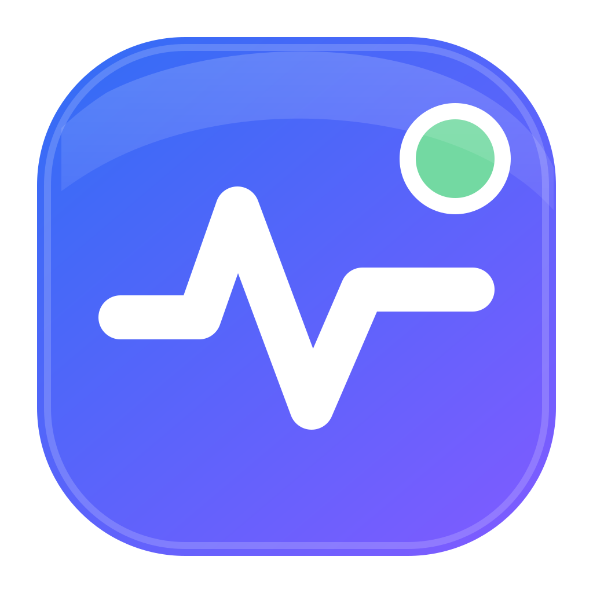

Protected by Wardveil
GoreeCloud Monitor
This local Glaze UI fallback belongs to the native client package. Normal operation loads the canonical private Monitor service directly.
Client shell ready. The Monitor service must be separately deployed and reachable at its approved private origin.